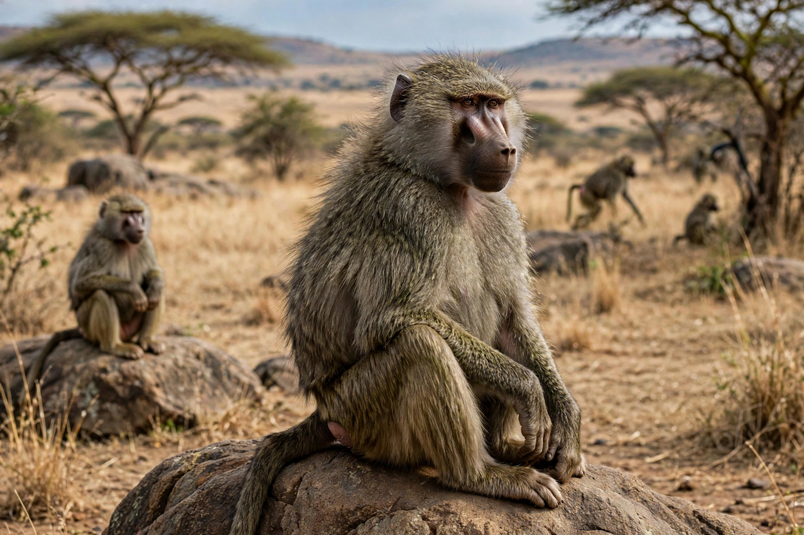

| Old World monkeys | |
|---|---|
 | |
| Kingdom | Animalia |
| Order | Primates |
| Family | Cercopithecidae |
| Subfamilies | Cercopithecinae; Colobinae |
| Range | Africa and Asia |
Old World monkeys are primates of the family Cercopithecidae, native to Africa and Asia. Together with the apes they form the parvorder Catarrhini, distinguished from the New World monkeys (Platyrrhini) of the Americas by their narrow, downward-facing nostrils, non-prehensile tails, and opposable thumbs. The family includes baboons, macaques, mandrills, guenons, colobus monkeys, and langurs — about 160 living species.
Old World monkeys range from the small talapoins (about 1 kg) to male mandrills exceeding 35 kg. Most species have tails, but none are prehensile; some, like the Barbary macaque, have only a vestigial tail. Many possess ischial callosities — toughened sitting pads — and cheek pouches for storing food. Their dental formula is 2.1.2.3 in each quadrant, the same as in apes and humans.
The family divides into two subfamilies. The Cercopithecinae (baboons, macaques, guenons) are mostly omnivorous with cheek pouches and simple stomachs. The Colobinae (colobus monkeys, langurs, proboscis monkeys) are leaf-eaters with complex, multi-chambered stomachs for fermenting foliage, and generally lack cheek pouches.
Most species are social, living in troops with hierarchies maintained by grooming and dominance displays. Many are terrestrial as well as arboreal — baboons and patas monkeys spend most of the day on the ground. Macaques in particular have adapted to human environments across Asia, and the rhesus macaque is an important research animal; the Rh blood factor was first identified in it.
New World monkey · Baboon · Macaque · Colobinae · Primate